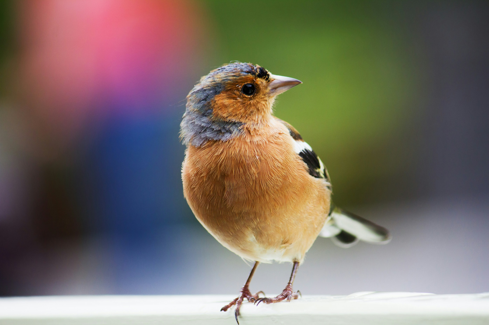

This project analysis the performance of Brisbane Lions and Port Adelaide over two seasons, offering insights into their scoring trends, win-loss records, and head-to-head outcomes. Through advanced data analysis and predictive modeling, it evaluates season scores across rounds, predicts the Grand Final winner, and forecasts home and away score differences for the next season.
The analysis highlights key performance metrics, such as average scores, winning percentages, and goal differentials, for both teams. It uses statistical methods and visualizations to uncover trends, identify patterns, and draw actionable insights. By incorporating predictive models, the project provides data-driven forecasts, supporting strategic decisions and providing valuable insights for future game strategies.
An Investigation into Supervised and Unsupervised Machine Learning Techniques.
This project involves training models to predict CO2 emissions, initially using all numerical continuous variables and later selecting a subset through exploratory data analysis. It examines yearly trends in CO2 emissions and evaluates the performance of categorical variables in classifying the dataset. Techniques are employed to check for overfitting, and performance measures are selected based on the analysis objectives. The deployability of the models is assessed, and categorical variables are analyzed to determine their impact on grouping non-categorical variables.

This study explores avian classification using advanced deep learning techniques, harnessing TensorFlow and Keras. Employing Convolutional Neural Network (CNN) Transfer learning models like InceptionResNetV2 and MobileNetV2, alongside constructed CNN architectures, it aimed at accurately extracting intricate bird features and classifying birds by species. By integrating these methods, the project seeks to develop a robust classification system for avian species.
This project introduces an innovative approach to emergency vehicle identification, utilizing Convolutional Neural Network(CNN) architectures.The primary goal is to create a strong classification model capable of accurately distinguishing between emergency and non-emergency vehicles in real-time scenarios. By utilizing CNNs, the project effectively analyzed and categorized various vehicle types, enabling rapid and accurate identification of emergency vehicles.The integration of CNN architectures not only optimized emergency operations but also greatly improved public safety by reducing confusion during critical situations.